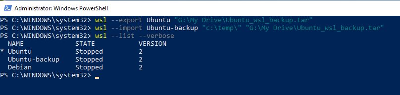

How to install WSL2 to your computer (Windows 11) ?¶
Installation Process (with PowerShell)¶
-
Start Powershell with Administrator rights (Run as Administrator)
-
WSL will be installed to your computer and in the default setting it will download latest Ubuntu
If you already have wsl installed you should make sure that it is updated. Use command
wsl --updateto update it.

Set default WSL version and check installed distributions¶

See a list of the Linux distributions available through the online store.¶
Lets install Ubuntu 24.04 and Debian Distripution. We will use Ubuntu as main platform and Debian for testing.¶
wsl --install --web-download --distribution Ubuntu-24.04
wsl --install --web-download --distribution Debian
wsl --setdefault Ubuntu-24.04
Updating WSL distripution using Powershell¶
wsl -d Ubuntu -u root bash -c 'apt update ; apt upgrade -y'
wsl -d Ubuntu-24.04 -u root bash -c 'apt update ; apt upgrade -y'
Enabling systemd to your default WSL distribution Ubuntu-24.04¶
We are starting to use systemd, which brings WSL Linux closer to a virtual machine or physical installation
wsl -u root -d Ubuntu-24.04 bash -c "touch /etc/wsl.conf"
wsl -u root -d Ubuntu-24.04 bash -c "echo [boot] >> /etc/wsl.conf"
wsl -u root -d Ubuntu-24.04 bash -c "echo systemd=true >> /etc/wsl.conf"
wsl -t Ubuntu-24.04
Limiting amount of memory and cpu WSL can use. Change values as needed¶
Start Powershell with NORMAL user rights and copy all command in to it.
$contentToAdd = @"
[wsl2]
memory=4GB # Limits VM memory in WSL 2 to 4 GB
processors=2 # Makes the WSL 2 VM use two virtual processors
[experimental]
autoMemoryReclaim=true
"@
New-Item $home\.wslconfig
Add-Content $home\.wslconfig $contentToAdd
notepad++ $home\.wslconfig
How to backup WSL and remove it from the machine to save space¶
Export and import a Ubuntu distribution to a TAR file¶
Import a new distribution

Uninstalling command is --unregister (Use only if needed)¶
No need to remove WSL distribution if everything is working
Problem Solving¶
Update Windows computer and WSL. Start Powershell with Administrator rights as many times is needed. Go through repairs in order and test regularly.
# Install Windows update modules
Install-Module PSWindowsUpdate -Confirm
Set-ExecutionPolicy -Scope Process -ExecutionPolicy unrestricted
Import-Module PSWindowsUpdate
Get-WindowsUpdate
Install-WindowsUpdate
# Reboot as needed
Enable-WindowsOptionalFeature -Online -FeatureName Microsoft-Hyper-V -All
Hyper-V still not working? Jump to "Hyper-V still not working?" otherwise, move on with WSL install
Let's check that WSL is installed¶
Update WSL kernel¶
Reinstall Ubuntu, Debian and Docker images. THIS WILL RESULT IN LOST DATA if you have not save data on your host machine!¶
Danger: data lost!
THIS WILL RESULT IN DATA LOST if you have not saved data on your host machine!
Now we need to update WSL Ubuntu-24.04 to update
Hyper-V still not working?¶
Forcing Hyper-v to start using Windows bootloader.
- Start Powershell with Adminitrator rights (Run as Administrator)
More command can be found https://docs.microsoft.com/en-us/windows/wsl/basic-commands